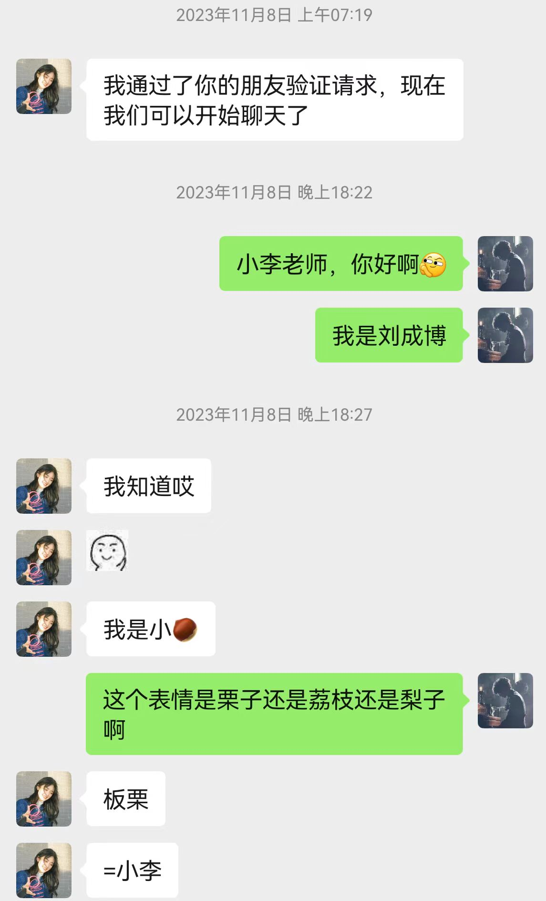

相遇
还记得吗，去年11月8日，我们开始了第一次的聊天，我们的列车就开始启程啦。
我记得在那之前第一次在幼儿园门口（上次我说洪山二巷，你坚持是幼儿园门口，那就幼儿园门口吧，谁让我宠着你呢！）见到你的时候，我就有点心动，你和他们聊天的时候我时不时的插上一嘴，你还以为我只是一个司机，怎么司机还接话呢，哼哼，我要记一辈子的。
我有些犹豫要不要问你要联系方式或者怎么样，这种想法一直持续了好长时间，最后我鼓起勇气问了他们一下你的基础情况，在我确认的时候，心情都快好到飞上了天。然后在我和曹宇的精心设计之下，期待着能够出现如同我们设想（我和你坐一边，他两坐一边，然后给你拆餐具等等等等）的样子，可偏偏你两一来就坐到对面（那会的餐具和我的餐具早就提前拆好了，只留了我旁边的餐具没拆！）我的小揪揪没能实现，那就这样吧，吃到一大半时间的时候，我因为要去接人，只好提前走啦。
这是另一段文章内容。
这是最后一段文章内容。